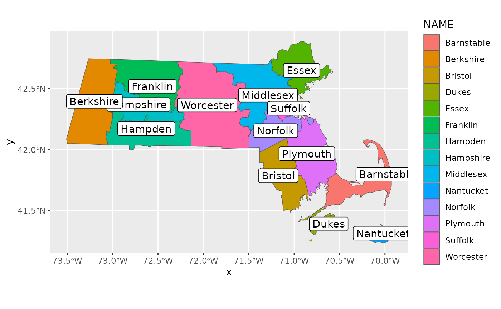

02: Understanding and Preparing Your Adjacency Structure
RSTr-adjacency.RmdOverview
The adjacency structure is a set of instructions that show the
spatial relationship between each region and informs RSTr
which counties to pull information from when spatially smoothing. In
this vignette, we will cover the requirements for the
adjacency object along with walking through the setup of
the adjacency information.
Requirements
Adjacency information is input as a list
adj where each element adj[[i]] is a vector of
indices denoting regions that are neighbors of region i.
Below, we will walk through the construction of the adjacency
information and address common issues that may arise.
Example: Massachusetts Map Data
For this example, we will continue using Massachusetts data as we did
in section 2. Included is an example dataset that contains Massachusetts
shapefile information, generated using the tigris
package:
head(mamap)This dataset contains several variables related to Census information on Massachusetts, but for our purposes we are only interested in two variables:
GEOIDcontains the FIPS code for each county. We can use this to associate each county with the counties in our event/population data; andgeometrydescribes how to map each region. We can use this to generate our adjacency information.
To begin, let’s first arrange mamap by
GEOID to ensure the counties are in the same order as our
maexample data, then generate some adjacency information
using the spdep package:
ma_shp <- sf::st_as_sf(mamap[order(mamap$GEOID), ])
ma_adj <- spdep::poly2nb(ma_shp)
#> Warning in spdep::poly2nb(ma_shp): some observations have no neighbours;
#> if this seems unexpected, try increasing the snap argument.
#> Warning in spdep::poly2nb(ma_shp): neighbour object has 3 sub-graphs;
#> if this sub-graph count seems unexpected, try increasing the snap argument.spdep::poly2nb() takes the information in
ma_shp$geometry and looks for any regions with touching
boundaries (i.e., queen contiguity). ma_adj is a list that
contains the indices of each region that is a neighbor with a given
region. Looking at ma_adj gives us some more
information:
ma_adj
#> Neighbour list object:
#> Number of regions: 14
#> Number of nonzero links: 38
#> Percentage nonzero weights: 19.38776
#> Average number of links: 2.714286
#> 2 regions with no links:
#> 1252, 1577
#> 3 disjoint connected subgraphsma_adj tells that there are 14 regions linked in 38
unique ways. However, it also notes that there are two regions with no
links. Regions with no links are problematic for RSTr
because it has no information with which to spatially smooth, causing
the model to crash. Because our data is in this incomplete format, we
will have to do some investigation and fixing to get it ready for
use.
Let us first look at the dataset to see which counties have no
neighbors. ma_adj tells us that regions 4 and 10 are our
regions with no links, but we can also use spdep::card() to
give us the indices of our no-link counties:
no_neigh <- spdep::card(ma_adj) == 0We can now investigate ma_shp for the counties with no
neighbors:
ma_shp[no_neigh, ]
#> Simple feature collection with 2 features and 12 fields
#> Geometry type: MULTIPOLYGON
#> Dimension: XY
#> Bounding box: xmin: -70.95137 ymin: 41.23796 xmax: -69.96018 ymax: 41.52178
#> Geodetic CRS: NAD83
#> STATEFP COUNTYFP COUNTYNS AFFGEOID GEOID NAME NAMELSAD
#> 1252 25 007 00606930 0500000US25007 25007 Dukes Dukes County
#> 1577 25 019 00606936 0500000US25019 25019 Nantucket Nantucket County
#> STUSPS STATE_NAME LSAD ALAND AWATER
#> 1252 MA Massachusetts 06 267292993 1004291414
#> 1577 MA Massachusetts 06 119637319 666826424
#> geometry
#> 1252 MULTIPOLYGON (((-70.8071 41...
#> 1577 MULTIPOLYGON (((-70.23405 4...According to this, our two no-link counties are Dukes and Nantucket (FIPS 25007 and 25019, respectively). Let’s check out a ggplot of our data to further investigate:

Here, we’ve generated a map colored by region and labeled with the name of each county. We can see Dukes and Nantucket in the southeast corner, and if you zoom in, you can see that these two counties aren’t touching any other counties. Upon closer inspection, Barnstable County seems like a good contender for a neighbor to both Dukes and Nantucket County; Dukes and Nantucket County are also close enough to be neighbors to each other. To rectify this, we can make some changes to our adjacency information. Let’s first get a feel for which counties are associated with which indices:
county_key <- seq_along(ma_shp$NAME)
names(county_key) <- ma_shp$NAME
county_key
#> Barnstable Berkshire Bristol Dukes Essex Franklin Hampden
#> 1 2 3 4 5 6 7
#> Hampshire Middlesex Nantucket Norfolk Plymouth Suffolk Worcester
#> 8 9 10 11 12 13 14We can see that Barnstable has an index of 1, Dukes has an index of
4, and Nantucket has an index of 10. We can use the
add_neighbors() function to set these counties as mutual
neighbors:
ma_adj <- add_neighbors(ma_adj, c(1, 4, 10))Now if we look at ma_adj, the message about no-link
regions is gone.
Note that if you run a model in RSTr and load in the
adjacency information saved in your model object, the indices will have
changed. This is because adjacency information is only used within Rcpp,
which uses a 0-indexing system as opposed to the 1-indexing system used
by R. When inputting data into *car(), only use a 1-indexed
adjacency structure.
Finally, even though we connected the two island counties to the
mainland counties of MA, as long as each region has at least one
neighbor, it is usable within RSTr. This means that,
theoretically, we could have made just Dukes and Nantucket neighbors of
each other, creating two separate islands with no related neighbors. In
this case, every region on both islands still has at least one
neighbor.
Closing Thoughts
In this vignette, we used spdep::poly2nb() to generate
our adjacency structure. We then fixed issues with counties without
neighbors and applied a naming scheme to the adjacency information
consistent with the data object created in section 2. From
here, the RSTr model is ready to be run with our
data and adjacency information!